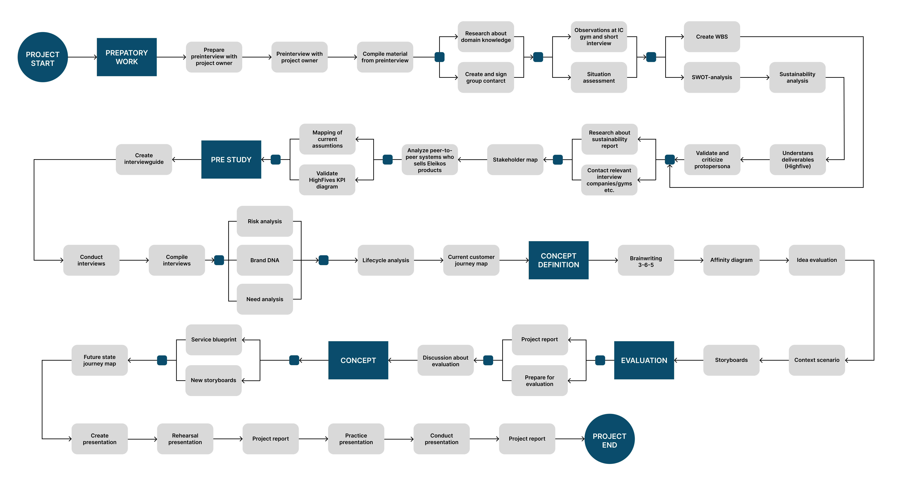
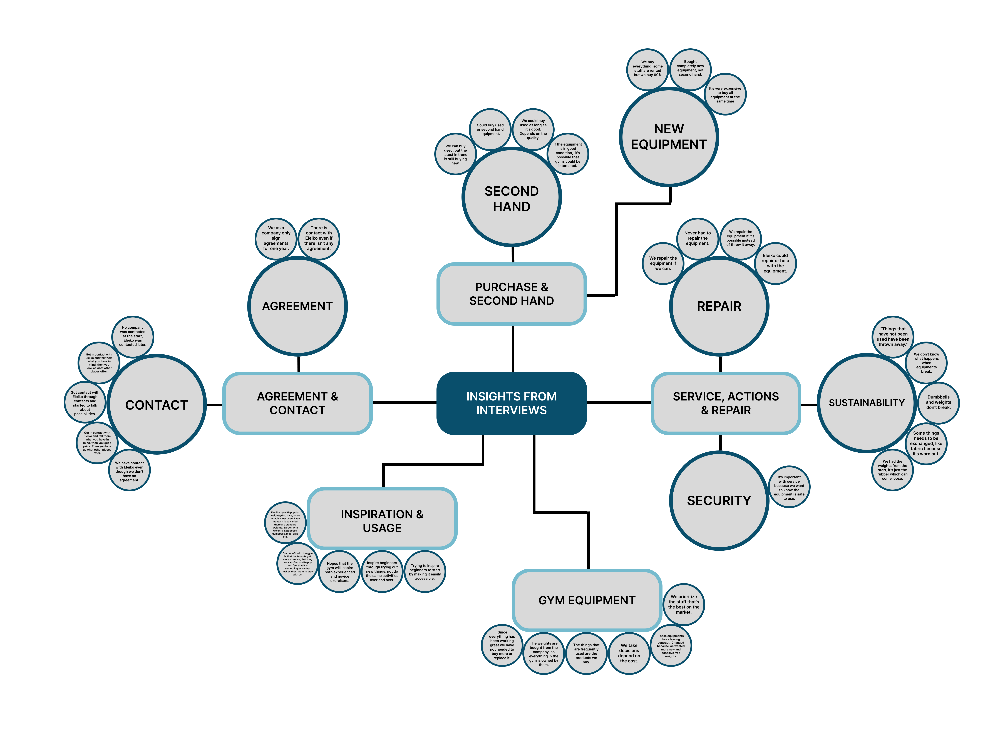

Strength as a Service: ELEIKO
Designstudio, April 2024, Service design
My Role: Documentation manager
Project Owner: ELEIKO
Tools: Miro
Description of the Project
In this design studio, my group was given a brief by Eleiko. The group reviewed the brief and identified the problems, design-requirements, challenges, and the goal. The task was to design a service where Eleikos customers would be able to rent training equipment and at the same time provide Eleiko with knowledge about how the equipment is being used. We were also going to explore the opportunities for a circular business model for Eleiko, they wanted to be able to control the circularity of the equipment since they work with sustainability.
Design Process
1. Preparatory work, Preliminary Studies & Analyzing brief
Domain knowledge, desktop research and brief
The project group started by analyzing the assigned brief, conducting desktop research and gaining domain knowledge. The purpose of conducting desktop research was to establish a solid foundation of knowledge and insights to guide our decisions throughout the project.
Current state analysis
To identify where Eleiko stands today, the project group conducted a current state analysis. Analyses like a SWOT-analysis and a sustainable analysis was conducted to make us understand which strengths, weakness and opportunities Eleiko had in the beginning of the project. This helped us understand what Eleiko needed to change to be able to go from a linear to a circular business model.
2. Research
Interview guide
Before conducting the interviews, we created an interview guide. When designing our guide, we focused primarily on how stakeholders acquired Eleiko's training equipment. We were interested in understanding their previous purchasing process to gain greater insight into the current procedure for purchasing equipment from Eleiko. This approach allowed us to identify pain points from the customer’s perspective and to develop a comprehensive view of the process.
Conduct interviews
To reach our identified target group (companies, hotels, and property owners) we began by researching online to find various facilities, hotels, and properties that currently have a gym or have previously purchased equipment from Eleiko. We conducted six interviews with the identified target group and recorded them because we didn't want to lose any important information.
Compile data
We transcribed the recordings and documented quotes (SK), key observations (BW), and summarized quotes (CK), ensuring we captured all data relevant to coding. Coding our data allowed us to identify patterns and trends in customer behavior and expectations, helping us understand customer needs and preferences. We decided to create a visualization of the identified themes and categories.
{kind=link}
Stakeholder Map: We identified relevant stakeholders by creating a stakeholder map. The stakeholder map helped us understand which actors Eleiko currently collaborates with, as well as other parties that could be important for Eleiko’s future network. The purpose of this map was to analyze Eleiko’s network structure and assess its potential for expansion through the implementation of a rental service.

3. Current state & Concept definition
Customer Journey Map: Current State
Based on the data, we developed a customer journey map to visualize the customer’s experience with Eleiko's current purchasing process. The map includes a scenario that follows the customer’s experience and illustrates the customer’s emotions and experience. To address pain points, we documented potential opportunities for improvement.

Concept definition methods
To generate concept ideas, we used the brainstorming method brainwriting 6-3-5. With a large number of ideas generated, we conducted an idea evaluation. This was done by having each team member vote on every idea using a color dot system. Then, context scenarios were developed. Each team member wrote down a scenario of a concept to get the ideas down on paper and therefore make the ideas more clear. We created storyboards to visualize these concepts. By visualizing each concept, we were able to filter out ideas that might not align with Eleiko’s or their customers' vision, or work in practice.
Future Customer Journey Map
nce the two service concepts were finalized, two future customer journey maps were developed based on the previously created current-state journey maps. By creating these future journey maps, the project group was able to visually communicate how the proposed services positively would transform the purchasing process for Eleiko's customers.

Service Blueprint
Once our two services were finalized, we created two service blueprints to map out the logistics of each service. The purpose of this was to visualize Eleiko's logistics and to outline the mandatory steps that both the customers and Eleiko would need to follow for these services to work in practice.

Concepts: Design Solutions
Strength as a Service
The concept strength as a service is a rental service that ensures Eleiko receives a steady inflow of products, thereby enabling a circular business model. Eleiko will rent or lease out new equipment in the beginning to start the flow of products, then they will have the opportunity to offer different packages, new, mixed, or used products. By offering used products can attract more customers since, based on our research, many customers thinks it’s too expensive.
A service agreement will be included in the renting or leasing. This means Eleiko will provide regular maintenance or repair damage as needed. Each product will have a product ID connected to a central database, allowing Eleiko to track and maintain control over its products.
The rental contract will remain binding as long as the customer wishes to continue renting. When the leasing contract expires, the customer will have the option to either return the products or purchase the products from Eleiko.

Value for Eleiko: How the concept will facilitate Eleiko’s shift to a circular business model?
The concept attracts new customer groups who are not willing to make large investments in a gym.
The concept ensures a steady inflow of products.
In the long term, the concept can offer various equipment packages, including used products.
EleikoCollect
EleikoCollect is a service encouraging companies that have gym equipment from Eleiko, to return the equipment to Eleiko in exchange for compensation. This allows Eleiko to regain control over its used equipment, enhancing product circularity and fostering a circular business model. Eleiko will offer a service where customer can have their current gym dismantled and, if desired, a new gym installed at the same time. Through this, customers who have purchased or are purchasing equipment from Eleiko, may be more happy to return the equipment. Customers with unused or stored Eleiko gym equipment can utilize EleikoCollect without needing to buy new equipment. Instead, they can have the equipment collected at no cost and receive a voucher for future use, in exchange for Eleiko reclaiming the equipment.
Information about the service will be available on Eleiko's website. Customers with a business account will be able to apprise their current equipment though Eleikos website by input details about the type of equipment and its duration of use. Once the appraisal is completed, the customer will receive an estimated value for their equipment. Customers are more likely to return equipment to Eleiko when they know the approximate value they will receive for their equipment.

Value for Eleiko: How the concept will facilitate Eleiko’s shift to a circular business model?
The concept enables Eleiko to collect equipment from customers who have purchased it.
The concept promotes a circular business model.
The concept allows Eleiko to potentially offer rental, leasing, or sales of used equipment in the future.
Corporate Account
By a corporate account, Eleiko can offer:
Specific features and tools that are only available to corporate accounts
Customers could view completed orders and current service agreements.
Companies can receive better support and closer contact with Eleiko.
Customers could report product damages to receive service for the product.
Value for Eleiko: How the concept will facilitate Eleiko’s shift to a circular business model?
Companies establish closer contact with Eleiko
Companies can collect contracts, previous orders, and other information in one place
Companies will have the ability to report damages to products.
Companies gaining better oversight of their payments.


Insights
- Design isn’t always about details: I learned that design could be about designing concepts and services instead of just detailed interfaces.
- Design for the project owner: I learned that I have to adapt my design decisions and solutions based on what the project owner wants.
- Conversations instead of interviews: Service design is about creating value, therefore it’s better to have conversations rather that interviews with the stakeholders.
- Adapt design process: I learned that the design process needs to be adapted to the project.
- Data from interviews: I learned that it’s essential to define the data to be gathered before interviews.
- Preparatory work & domain knowledge: I realized preparatory work and domain knowledge are important aspects to set limits to the project.